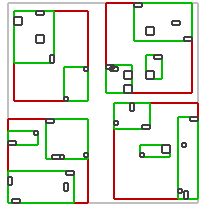
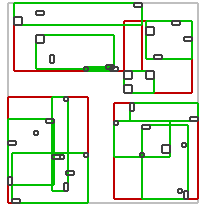
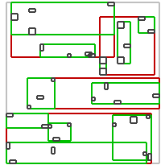

|
Home | Libraries | People | FAQ | More |


R-tree is a tree data structure used for spatial searching. It was proposed by Antonin Guttman in 1984 [1] as an expansion of B-tree for multi-dimensional data. It may be used to store points or volumetric data in order to perform a spatial query later. This query may return objects that are inside some area or are close to some point in space [2].
The R-tree structure is presented on the image below. Each R-tree's node store a box descring the space occupied by its children nodes. At the bottom of the structure, there are leaf-nodes which contains values (geometric objects representations).

The number of maximum and mininimum node's elements must be specified by the user. If the number of elements reaches it's maximum the new node is created and elements are split between nodes. If the number of elements in node is too small, the node is deleted and elements are reinserted into the tree.
The R-tree is a self-balanced data structure. The key part of balancing algorithm is node splitting algorithm [3] [4]. Each algorithm produces different splits so the internal structure of a tree may be different for each one of them. In general more complex algorithms analyses elements better and produces less overlapping nodes. In the searching process less nodes must be traversed in order to find desired obejcts. On the other hand more complex analysis takes more time. In general faster inserting will result in slower searching and vice versa. The performance of the R-tree depends on balancing algorithm, parameters and data inserted into the container. Example structures of trees created by use of three different algorithms and operations time are presented below. Data used in benchmark was random, non-overlapping boxes.
|
linear algorithm |
quadratic algorithm |
R*-tree |
|
|---|---|---|---|
|
Example structure |
 |
 |
|
|
1M Values inserts |
2.11s |
2.98s |
5.49s |
|
100k spatial queries |
1.52s |
0.45s |
0.17s |
|
100k knn queries |
4.51s |
2.22s |
0.6s |
Key features of this implementation of the R-tree are:
R-tree depends on Boost.Move, Boost.Container, Boost.Tuple, Boost.Utility, Boost.MPL.
The spatial index was originally started by Federico J. Fernandez during the Google Summer of Code 2008 program, mentored by Hartmut Kaiser.
I'd like to thank Barend Gehrels, Bruno Lalande, Mateusz Łoskot, Lucanus J. Simonson for their support and ideas.
[1] Guttman, A. (1984). R-Trees: A Dynamic Index Structure for Spatial Searching
[2] Cheung, K.; Fu, A. (1998). Enhanced Nearest Neighbour Search on the R-tree
[3] Greene, D. (1989). An implementation and performance analysis of spatial data access methods
[4] Beckmann, N.; Kriegel, H. P.; Schneider, R.; Seeger, B. (1990). The R*-tree: an efficient and robust access method for points and rectangles